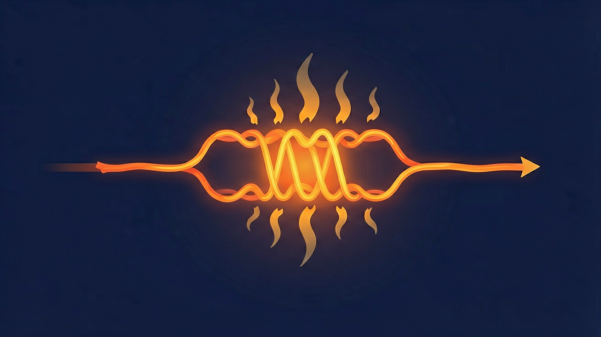
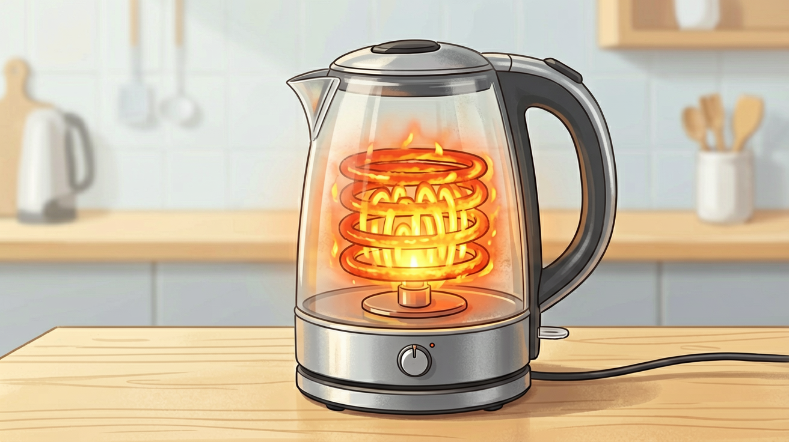
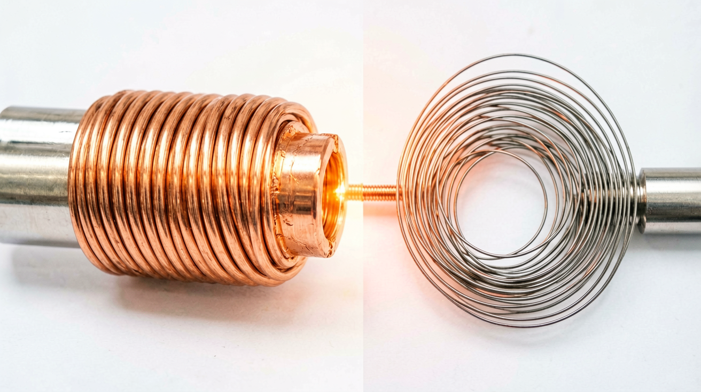

电流通过导体产生热量：Q=I²Rt。电阻越大、电流越大、通电越久，热量越多。电热器利用这一效应。
电热壶、电饭煲会热。
写成 Q=IRt；忽略纯电阻条件。
公式→影响因素→应用与安全。
焦耳定律公式
Q=I²Rt（焦耳定律）。
此时 Q=W=Pt=UIt 等可互通。
电热器用高电阻发热材料。


💡 增大电阻或想象更大电流，联系 Q=I²Rt。
外链：https://phet.colorado.edu/sims/html/resistance-in-a-wire/latest/resistance-in-a-wire_zh_CN.html
电流越大，相同条件下热量
电阻越大，相同电流时间下热量
I=2A R=5Ω t=10s，Q=
家庭电路短路危险主要因为
电热丝材料通常
用三句话总结本课最关键的一条规律，并举一个生活例子。
勾选你已掌握的条目。
❓ 为什么电炉丝烧红了，导线却没事？
❓ 电流越大越容易烧坏电器吗？
❓ 为什么手机充电时会发热？
学完这一课，这些问题你都能自信地回答。
🎯 能说出焦耳定律的数学表达式Q=I²Rt
🎯 能判断电路中各元件发热量的相对大小
🎯 能计算给定条件下的电流热效应值
✅ 实际有微小电阻，大电流时仍会发热
💡 忽略电阻的客观存在性
✅ 实际与电流平方成正比
💡 混淆欧姆定律与焦耳定律关系
口诀：电流平方乘电阻，时间长短定热量
类比：像跑步越喘（电流大）、穿厚衣（电阻大）、跑得久（时间长），出汗（发热）越多
（中考题）两条并联铜丝，粗的电阻0.1Ω，细的0.4Ω，通过相同电流时发热比是？
电饭煲切换到保温档后，发热量减小的主要原因是？
手机快充时充电器更热，主要是因为？
And：学生知道电流通过电阻丝会发热
But：不清楚发热量与哪些因素有关
Therefore：建立发热现象与变量的初步联系
电流通过导体时，电能转化为内能的现象叫电流热效应。发热程度用热量Q表示，单位是焦耳（J）。例如：2A电流通过5Ω电阻10秒，产生的热量Q=I²Rt=2²×5×10=200J。电阻越大、电流越大、时间越长，发热越明显。
🌍 电饭煲煮饭时，内胆底部的电阻丝发热，而连接电源的导线几乎不热。这是因为电阻丝的电阻远大于导线。
以下哪种情况发热量最大？
And：学生知道Q与I、R、t有关
But：不理解具体数学关系
Therefore：通过实验归纳焦耳定律
通过控制变量实验发现：①当R和t不变时，Q与I²成正比（如电流从1A→2A，Q变为4倍）；②当I和t不变时，Q与R成正比（如电阻从2Ω→4Ω，Q翻倍）；③当I和R不变时，Q与t成正比（时间延长3倍，Q也3倍）。最终得出Q=I²Rt。
🌍 调节电吹风档位时，高温档不仅增大电流，还会自动增加电阻丝长度，使R和I同时变化，热量显著增加。
若电流减半，电阻不变，要产生相同热量需要多长时间？
And：学生掌握Q=I²Rt
But：不会逆向求解其他量
Therefore：培养公式变形能力
焦耳定律可变形为：①求电流I=√(Q/Rt)，如产生180J热量，电阻5Ω作用6秒，I=√(180/5×6)=√6≈2.45A；②求电阻R=Q/I²t；③求时间t=Q/I²R。注意单位统一用国际单位制。
🌍 保险丝熔断电流计算就用这个原理：已知熔断热量Q，根据电阻R和动作时间t反推最大允许电流。
要产生100J热量，若R=4Ω，t=5s，需要多大电流？
And：学生理解发热原理
But：不会解释实际安全问题
Therefore：应用定律分析安全隐患
根据Q=I²Rt：①短路时I剧增（如从1A→100A），Q会增大10000倍！②超负荷用电使导线持续大电流发热（如1mm²铜线长期超6A会过热）。安全措施：保险丝（当Q达到阈值自动熔断）、断路器（实时监测I和t）。
🌍 多个大功率电器插同一插座时，总电流可能超过导线承载能力，导致插头过热变形，这就是焦耳定律的体现。
下列哪种做法最危险？
点击节点跳转到对应章节；可切换布局。
先独立作答，再点选项查看对错与错因。
相同电阻丝通不同电流时，发热量最大的情况是
电热水壶功率增大的直接原因是
实验中用温度计测量电阻丝发热量，需保持不变的量是
焦耳定律公式Q=____中，时间t的单位必须是____
答案：I²Rt；秒
国际单位制要求
两段电阻丝并联时总发热量____（大于/小于/等于）串联时的总发热量
答案：大于
并联总电阻更小，相同电压下功率更大
关于电热与电阻的关系，正确的是
用相同材料不同规格的电阻丝设计对比实验